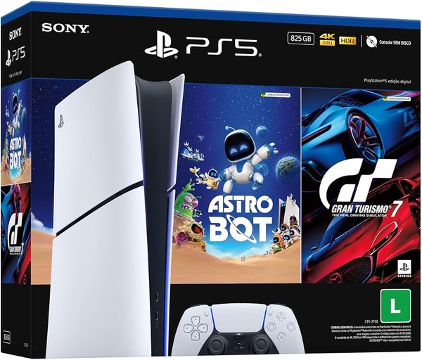
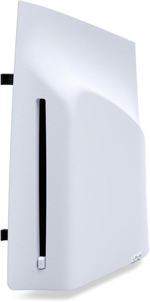

Resposta curta: para a maioria das pessoas, o PS5 Slim Digital é a melhor compra desta Black Friday. O PS5 Pro só compensa se você quer a melhor imagem possível numa TV 4K e não liga de pagar quase o dobro. E o modelo com disco só vale se você já tem (ou pretende comprar) jogos físicos usados.
Os três modelos, lado a lado
| PS5 Slim Digital | PS5 Slim com disco | PS5 Pro | |
|---|---|---|---|
| Preço sugerido pela Sony | R$ 4.599,90 | R$ 5.099,90 | R$ 7.499,90 |
| Preço visto hoje (Amazon) | R$ 4.369,05 | R$ 4.606,55 | R$ 7.899,00 |
| Armazenamento | 825 GB | 1 TB (conforme o anúncio) | 2 TB |
| Leitor de disco | Não (pode comprar à parte) | Sim | Não (pode comprar à parte) |
| GTA 6 | 30 fps, quedas em ação pesada | 30 fps, quedas em ação pesada | 30 fps mais estável, imagem mais nítida e ray tracing |
Preços vistos em 26/11/2026 e sujeitos a mudança a qualquer momento — o botão de cada produto leva ao preço atual. Os pacotes Slim desta tabela incluem ASTRO BOT e Gran Turismo 7.
PS5 Slim Digital — o melhor custo-benefício

PlayStation 5 Slim Digital 825 GB – Pacote ASTRO BOT e Gran Turismo 7
R$ 4.369,05 visto em 26/11/2026
Ver preço atual na AmazonMesmo desempenho do modelo com disco, por menos. Como a edição física de GTA 6 vem com código de download, você não perde nada nele. O ponto de atenção é o armazenamento de 825 GB: com GTA 6 ocupando até 212 GB, cabem poucos jogos grandes ao mesmo tempo.
Preço bom de Black Friday: abaixo de R$ 4.000. Hoje ele está acima disso na Amazon — se aparecer cupom, avisamos no canal.
PS5 Slim com disco — para quem joga mídia física

PlayStation 5 Slim com leitor de disco – Pacote ASTRO BOT e Gran Turismo 7
R$ 4.606,55 visto em 26/11/2026
Ver preço atual na AmazonCompensa se você compra jogos usados, troca com amigos ou tem coleção de discos de PS4/PS5. A diferença de hoje para o Digital é de cerca de R$ 240 — menor que o preço do leitor de disco avulso (R$ 589,90), então, se você acha que vai querer o leitor um dia, já leve este.
PS5 Pro — a melhor imagem, não mais fps
Em GTA 6, o Pro entrega 30 fps mais estáveis e imagem visivelmente mais nítida numa TV 4K. Mas o jogo não tem modo 60 fps em nenhum console, então ele não "destrava" a fluidez. Hoje o preço na Amazon está acima do sugerido pela Sony (R$ 7.499,90): só vale na Black Friday se cair para perto de R$ 6.500. Lembre que ele também não tem leitor de disco.

Leitor de disco para PS5 Slim e PS5 Pro (oficial)
R$ 589,90 visto em 26/11/2026
Ver preço atual na AmazonE o bundle com GTA 6?
Fizemos a conta no guia bundle GTA 6 + PS5 vale a pena? — spoiler: hoje, separado sai mais barato.
Este conteúdo é independente e baseado em informações públicas (análises da imprensa especializada e preços das lojas). Podemos receber comissão pelas compras feitas pelos links, sem custo extra para você.